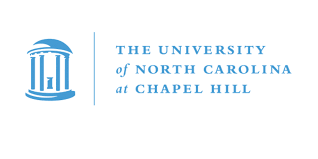

University of North Carolina at Chapel Hill
Master of Science in Computer Science
Expected: May 2026
CGPA: 4.0/4.0
Location: Chapel Hill, North Carolina, USA
Relevant Coursework:
- Deep Learning: Neural networks, CNNs, RNNs, Transformers, and advanced architectures
- LLMs for Software: Large Language Models applications in software development
- Visual Computing: Computer graphics, visualization, and computational photography
- Image Processing: Digital image analysis, filtering, and enhancement techniques
- Multimodal AI: Integration of vision, language, and audio modalities
- Reinforcement Learning and Markov Decision Processes: RL algorithms, policy optimization, and MDPs
- Machine Learning: Supervised, unsupervised, and semi-supervised learning techniques
- Software Engineering: Design patterns, software architecture, and development methodologies
Academic Achievements:
- Maintaining perfect 4.0 GPA throughout the program
- Graduate Teaching Assistant at UNC School of Data Science and Society
- Summer AI Engineering Intern at UNC School of Medicine
Professional Certifications

Databricks Certified Data Engineer Professional
Expertise in structured streaming, Lakehouse architecture, testing, deployment, and security
Verify Certification →
AWS Certified Machine Learning Associate
Proficiency in Glue, S3, Kinesis, SageMaker, ECS, CloudWatch, Athena, and Redshift
Verify Certification →
Oracle AI Vector Search Certified Professional
Advanced skills in RAG, vector indexing, similarity search, Select AI, and GoldenGate
Verify Certification →Technical Skills
Data Engineering & Cloud
Spark SQL
PySpark
Azure Databricks
Azure Synapse Analytics
AWS S3
Kafka
DynamoDB
HDFS
MapReduce
CDC
ADF
Artificial Intelligence & Machine Learning
Deep Learning
NLP
Computer Vision
PyTorch
TensorFlow
Keras
LangChain
Hugging Face
MLflow
scikit-learn
Programming & Development
Python
C/C++
Java
JavaScript
React
FastAPI
Docker
Kubernetes
Git
CI/CD